Act I · The tension
By now we can fit a line, add controls, and read a slope. But a slope is an association: schools with better-educated parents score higher; countries with stronger property rights are richer. Does the regressor cause the outcome?
This chapter works through nine case studies on real data. The first four push observational regression as far as it goes. The last four bring in a research design (an RCT, difference-in-differences, a regression discontinuity, or an instrumental variable) that turns a slope into a causal claim.
The question running through every case is the same: where does the variation in the regressor come from?
| Case | Question | Method | Headline result |
|---|---|---|---|
| 13.1 | What drives school test scores? | Multiple regression | +73.9 API points per year of parent ed. |
| 13.2 | Constant returns to scale? | Cobb–Douglas, HAC SEs | elasticities sum to 1.04 (p = 0.636) |
| 13.3 | Why did the Phillips curve break? | Omitted variables bias | +0.265 = −0.128 + 1.146 × 0.343 |
| 13.4 | What determines fuel economy? | Log-log, clustered SEs | weight elasticity −0.56 |
| 13.5 | Does cost-sharing cut spending? | RCT | 95% plan: −$1,108 vs free care |
| 13.6 | Did free care help child nutrition? | Diff-in-differences | +0.52 weight-for-age z-units |
| 13.7 | Does holding a seat help a party? | Regression discontinuity | +4.8 percentage points |
| 13.8 | Do institutions cause prosperity? | Instrumental variables | IV 0.94 vs OLS 0.52 |
| 13.9 | How does raw data become final data? | Read, merge, clean | — |
Controls can only close the confounders we measure. A design closes the ones we don’t.
| SE type | pyfixest syntax | Use when errors are… | Cases |
|---|---|---|---|
| Heteroskedasticity-robust | vcov="HC1" |
independent, unequal variance (cross-sections) | 13.1, 13.7, 13.8 |
| HAC (Newey–West) | vcov="NW" + time_id, lag |
autocorrelated over time (time series) | 13.2, 13.3 |
| Cluster-robust | vcov={"CRV1": "group"} |
correlated within groups | 13.4 (maker), 13.5 (family), 13.6 (community) |
The coefficient is identical under all three. Only the standard errors, and therefore the \(t\)-statistics, \(p\)-values and confidence intervals, change.
Match the standard error to how the data were generated. In 13.4, clustering makes the SEs 6–9× larger than HC1.
A credible causal estimate is not a better regression. It is a better source of variation.
Cases 13.1–13.4 · describe, structure, diagnose
Multiple regression · cross-section · HC1 standard errors
Data. 807 California high schools, 1999 (AED_API99.DTA). The Academic Performance Index (API) runs from 200 to 1000; the state target is 800.
| Variable | Meaning |
|---|---|
api99 |
Academic Performance Index, 1999 (outcome) |
edparent |
average parent education, in years |
meals |
% of students in the free / reduced-price lunch program (poverty proxy) |
englearn |
% English learners |
yearround |
1 if the school runs a multi-track year-round calendar |
credteach, emerteach |
% of teachers with full / emergency credentials |
Every regressor is the result of choices by families, districts or teachers, so expect associations, not causal effects.
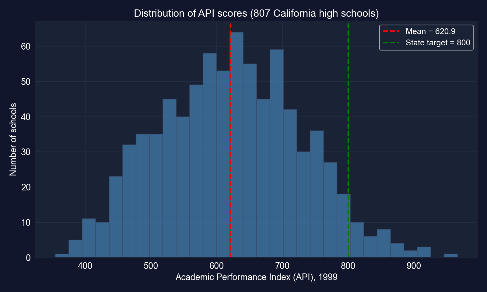
Distribution of 1999 API scores across 807 high schools. Red: mean (620.9); green: the state target of 800.
The mean school scores about 621, and only 4.8% of schools reach 800, so the outcome varies enough to explain.
!pip install -q pyfixest # pyfixest is not preinstalled in Colab
import pandas as pd # tabular data
import pyfixest as pf # OLS / IV with R-style formulas
# 807 California high schools, 1999
url = "https://raw.githubusercontent.com/quarcs-lab/data-open/master/AED/AED_API99.DTA"
data_api = pd.read_stata(url) # read the Stata file into a DataFrame
vars_api = ["api99", "edparent", "meals", "englearn", "yearround", "credteach", "emerteach"]
data_api[vars_api].describe() # summary statistics for the 7 variables
fit_api_biv = pf.feols("api99 ~ edparent", data=data_api, vcov="HC1") # bivariate OLS
fit_api_biv.summary() # intercept, slope, robust SE, R²| Coef. | SE | \(t\) | |
|---|---|---|---|
| Intercept | −400.314 | 15.993 | −25.03 |
edparent |
79.529 | 1.219 | 65.25 |
N = 807 · HC1 SEs · \(R^2 = 0.835\) · 95% CI for slope: [77.14, 81.92]
Each additional year of average parent education is associated with 79.5 more API points.
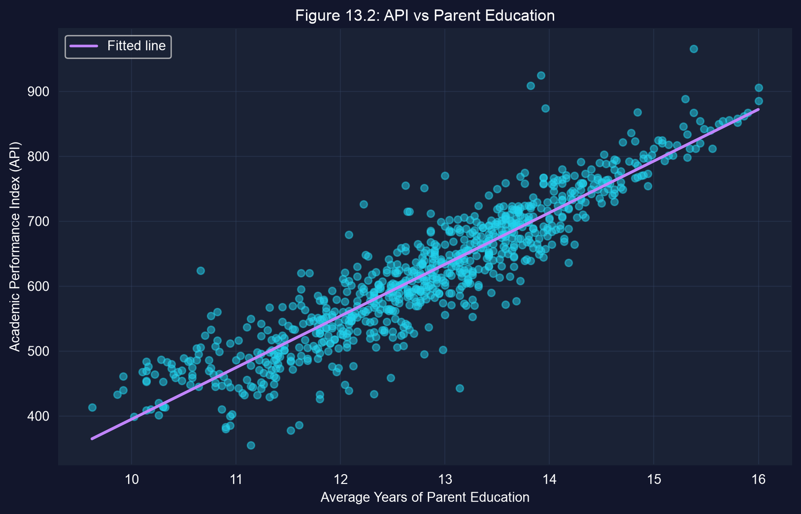
A huge, precise slope, but edparent also stands in for income, language and neighbourhood. Next, we add controls.
# continues from the previous block (data_api, vars_api already defined)
import seaborn as sns # statistical plotting (heatmap)
import matplotlib.pyplot as plt # figure handling
corr_matrix = data_api[vars_api].corr() # pairwise Pearson correlations
print(corr_matrix.round(2)) # numeric matrix, 2 decimals
sns.heatmap(corr_matrix, annot=True, fmt=".2f", cmap="coolwarm", center=0) # coloured matrix
plt.show() # display the heatmapBefore adding controls, check how strongly they move together. That decides how precisely their separate effects can be estimated.
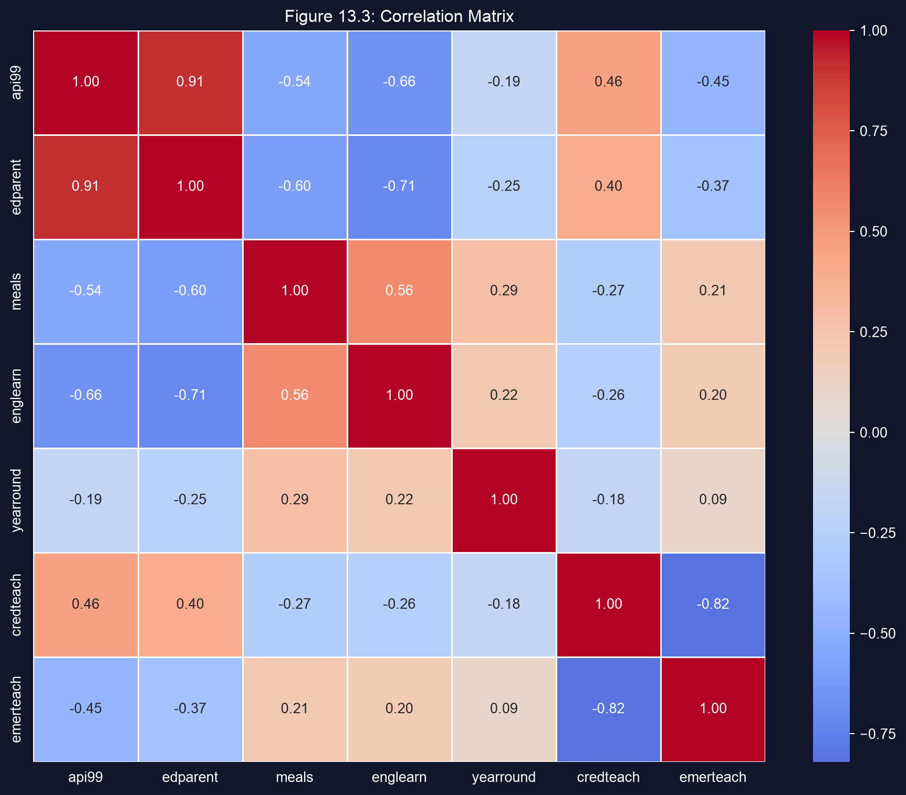
| Pair | \(r\) |
|---|---|
api99–edparent |
0.91 |
api99–englearn |
−0.66 |
api99–meals |
−0.54 |
edparent–englearn |
−0.71 |
edparent–meals |
−0.60 |
credteach–emerteach |
−0.82 |
Parent education, poverty and English learners largely describe the same schools, so their separate effects will be hard to pull apart.
# continues from the previous block
fit_api_mult = pf.feols("api99 ~ edparent + meals + englearn + yearround + credteach + emerteach",
data=data_api, vcov="HC1") # six regressors, robust SEs
fit_api_mult.summary() # full coefficient table
coef_df = pd.DataFrame({ # compact table of results
"Coefficient": fit_api_mult.coef(), # point estimates
"Std Error": fit_api_mult.se(), # HC1 standard errors
"t-stat": fit_api_mult.tstat(), # coefficient / SE
"p-value": fit_api_mult.pvalue() # two-sided p-values
}).round(3)
print(coef_df)| Variable | Coef. | SE | \(t\) | \(p\) | 95% CI |
|---|---|---|---|---|---|
| Intercept | −345.328 | 44.027 | −7.84 | < 0.001 | [−431.75, −258.91] |
edparent |
73.942 | 1.835 | 40.29 | < 0.001 | [70.34, 77.54] |
meals |
0.079 | 0.092 | 0.86 | 0.390 | [−0.10, 0.26] |
englearn |
−0.358 | 0.177 | −2.02 | 0.044 | [−0.71, −0.01] |
yearround |
25.956 | 10.752 | 2.41 | 0.016 | [4.85, 47.06] |
credteach |
0.387 | 0.349 | 1.11 | 0.268 | [−0.30, 1.07] |
emerteach |
−1.470 | 0.358 | −4.11 | < 0.001 | [−2.17, −0.77] |
N = 807 · HC1 SEs · \(R^2 = 0.853\) (vs 0.835 with edparent alone)
With five controls, the parent-education slope falls only from 79.5 to 73.9, and the controls add just 1.8 points of \(R^2\).
edparent 73.9: comparing schools with the same poverty, language, calendar and credential mix, one more year of parent education goes with 73.9 more API pointsmeals 0.08 (\(p = 0.39\)): on its own, poverty correlates \(-0.54\) with API, but once parent education is held fixed it adds no separate predictive informationedparent (\(r = -0.60\)), so the data cannot separate the twoA partial effect answers “compared with otherwise-similar schools…”, and the answer depends on which variables we hold fixed.
emerteach −1.47 per percentage point: more emergency-credentialed teachers, lower scores (\(p < 0.001\))credteach is insignificant (\(p = 0.27\)): the two are correlated \(-0.82\), so they compete for the same variationyearround +26.0 (\(p = 0.016\)): year-round schools score 26 points higher conditional on the rest, although the simple correlation is negative (\(-0.19\))Collinear regressors share credit unpredictably, and conditioning can flip a sign, which previews the omitted-variables lesson of 13.3.
edparent is a proxy for a whole bundle of advantages, so 73.9 is a conditional association, not “the effect of sending parents back to school”.
Cobb–Douglas production function · log-log model · HAC standard errors
The Cobb–Douglas production function maps capital \(K\) and labor \(L\) into output \(Q\):
\[Q = A\,K^{\beta_2}\,L^{\beta_3}\]
| If \(\beta_2 + \beta_3\) is… | Returns to scale | Doubling both inputs… |
|---|---|---|
| \(= 1\) | constant | doubles output |
| \(> 1\) | increasing | more than doubles output |
| \(< 1\) | decreasing | less than doubles output |
Returns to scale come down to a single number, \(\beta_2 + \beta_3\), which we can estimate and test.
\[\ln Q = \underbrace{\ln A}_{\beta_1} + \beta_2 \ln K + \beta_3 \ln L + u\]
The model is now linear in its parameters, so OLS applies. Each slope is an elasticity: \(\beta_2 = \partial \ln Q / \partial \ln K\), the percentage change in output per 1% change in capital, holding labor fixed.
Logs do two jobs here: they make the model estimable by OLS, and they make the coefficients unit-free elasticities.
| Index in 1922 | Value | Growth since 1899 |
|---|---|---|
| Output \(Q\) | 240 | 2.4× |
| Capital \(K\) | 431 | 4.3× |
| Labor \(L\) | 161 | 1.6× |
Why HAC standard errors?
Capital grew much faster than output or labor. How the regression splits output growth between the two inputs is the elasticity question.
!pip install -q pyfixest # pyfixest is not preinstalled in Colab
import numpy as np # np.log for the transform
import pandas as pd # tabular data
import pyfixest as pf # OLS with R-style formulas
url = "https://raw.githubusercontent.com/quarcs-lab/data-open/master/AED/AED_COBBDOUGLAS.DTA"
data_cobb = pd.read_stata(url) # 24 years of U.S. manufacturing, 1899–1922
data_cobb["lnq"] = np.log(data_cobb["q"]) # log output
data_cobb["lnk"] = np.log(data_cobb["k"]) # log capital
data_cobb["lnl"] = np.log(data_cobb["l"]) # log labor
data_cobb["_time"] = range(len(data_cobb)) # time index required by Newey–West
fit_cobb = pf.feols("lnq ~ lnk + lnl", data=data_cobb,
vcov="NW", vcov_kwargs={"time_id": "_time", "lag": 3}) # HAC SEs, 3 lags
fit_cobb.summary() # elasticities, HAC SEs, R²| Variable | Coef. | HAC SE | \(t\) | \(p\) | 95% CI |
|---|---|---|---|---|---|
| Intercept | −0.177 | 0.398 | −0.45 | 0.660 | [−1.000, 0.646] |
lnk (capital) |
0.233 | 0.063 | 3.72 | 0.001 | [0.103, 0.363] |
lnl (labor) |
0.807 | 0.135 | 6.00 | < 0.001 | [0.529, 1.086] |
N = 24 · Newey–West SEs, 3 lags · \(R^2 = 0.957\)
Early-1900s manufacturing was labor-driven: the labor elasticity (0.81) is about 3.5 times the capital elasticity (0.23).
# continues from the previous block
from scipy import stats # F distribution for the p-value
R = np.array([0.0, 1.0, 1.0]) # restriction vector: picks out β_K + β_L
b_hat = fit_cobb.coef().values # coefficients [Intercept, lnk, lnl]
V_hac = fit_cobb._vcov # Newey–West (HAC) covariance matrix
df_resid = fit_cobb._N - len(b_hat) # residual degrees of freedom: 24 − 3 = 21
f_stat = (R @ b_hat - 1.0)**2 / (R @ V_hac @ R) # Wald statistic for H0: β_K + β_L = 1
p_value = 1 - stats.f.cdf(f_stat, 1, df_resid) # p-value from F(1, 21)
print(R @ b_hat, f_stat, p_value) # estimated sum, F, pThe test reuses the HAC covariance matrix, so the inference matches the HAC standard errors on the previous slide.
| Quantity | Value |
|---|---|
| \(\hat\beta_K + \hat\beta_L\) | 1.040 |
| HAC SE of the sum | 0.084 |
| \(F(1, 21)\) | 0.23 |
| \(p\)-value | 0.636 |
| 95% CI for the sum | [0.87, 1.21] |
The estimate (1.04) is close to 1 and statistically indistinguishable from it, which supports constant returns without proving them.
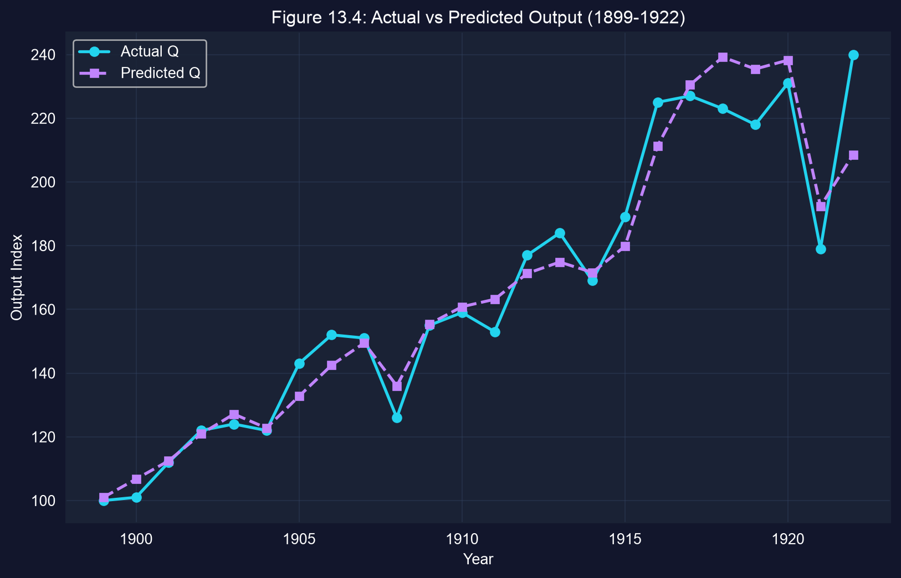
Actual vs predicted output, 1899–1922. Predictions are \(e^{\widehat{\ln Q}}\) multiplied by the retransformation factor \(e^{\hat\sigma^2/2}\).
To predict levels from a log model, exponentiate and rescale by \(e^{\hat\sigma^2/2}\); here \(\hat\sigma = 0.058\), so the correction is tiny (×1.0017).
The CRS test is informative, but treat the separate elasticities as fragile.
Omitted variables bias · time series · HAC standard errors
\[\text{Inflation}_t = \beta_1 + \beta_2\,\text{Urate}_t + \beta_3\,\text{ExpInflation}_t + u_t\]
If expected inflation belongs in the model, omitting it is not harmless. It can distort, even reverse, the unemployment slope.
!pip install -q pyfixest # pyfixest is not preinstalled in Colab
import pandas as pd # tabular data
import pyfixest as pf # OLS with R-style formulas
url = "https://raw.githubusercontent.com/quarcs-lab/data-open/master/AED/AED_PHILLIPS.DTA"
data_phillips = pd.read_stata(url) # U.S. annual data, 1949–2014
data_pre1970 = data_phillips[data_phillips["year"] < 1970].copy() # 1949–1969
data_pre1970["_time"] = range(len(data_pre1970)) # time index for HAC
fit_pre = pf.feols("inflgdp ~ urate", data=data_pre1970,
vcov="NW", vcov_kwargs={"time_id": "_time", "lag": 3}) # HAC, 3 lags
fit_pre.summary() # slope on unemployment| Coef. | HAC SE | \(p\) | |
|---|---|---|---|
| Intercept | 7.106 | 1.581 | < 0.001 |
urate |
−1.030 | 0.325 | 0.005 |
N = 21 (1949–1969) · NW, 3 lags · \(R^2 = 0.454\)
One percentage point more unemployment is associated with about 1.03 percentage points less inflation.
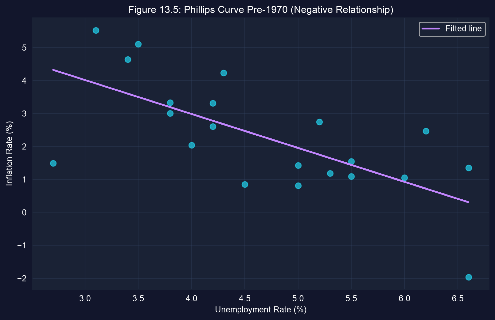
The classic downward-sloping Phillips curve: negative and statistically significant (\(p = 0.005\)).
# continues from the previous block
data_post1970 = data_phillips[data_phillips["year"] >= 1970].copy() # 1970–2014
data_post1970["_time"] = range(len(data_post1970)) # time index for HAC
fit_post = pf.feols("inflgdp ~ urate", data=data_post1970,
vcov="NW", vcov_kwargs={"time_id": "_time", "lag": 5}) # HAC, 5 lags
fit_post.summary() # has the slope survived?The specification is identical. Only the period changes, and with it the lag length for the longer series.
| Coef. | HAC SE | \(p\) | |
|---|---|---|---|
| Intercept | 1.928 | 1.868 | 0.308 |
urate |
+0.265 | 0.326 | 0.420 |
N = 45 (1970–2014) · NW, 5 lags · \(R^2 = 0.028\)
The point estimate is now positive, but it is not significant (\(p = 0.42\)), and \(R^2\) collapses from 0.45 to 0.03.
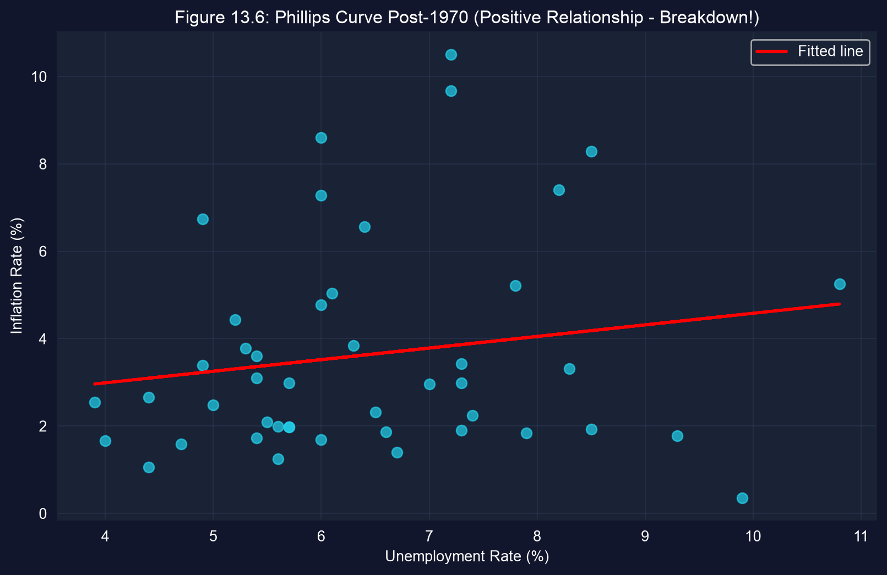
Same two variables, opposite sign. Either the economy changed, or the bivariate model was always missing something.
\[\underbrace{y = \beta_1 + \beta_2 x + \beta_3 z + u}_{\text{long (true) model}} \qquad \underbrace{z = \gamma_1 + \gamma\,x + v}_{\text{auxiliary regression}}\]
Substitute \(z\) into the long model and regress \(y\) on \(x\) alone:
\[E[b_2] = \beta_2 + \underbrace{\beta_3\,\gamma}_{\text{omitted variables bias}}\]
The bias is (effect of the omitted \(z\) on \(y\)) × (how \(z\) moves with the included \(x\)). It vanishes only if \(\beta_3 = 0\) or \(\gamma = 0\).
# continues from the previous block
data_exp = data_post1970.dropna(subset=["inflgdp1yr"]).copy() # rows with expected inflation
data_exp["_time"] = range(len(data_exp)) # time index for HAC
fit_augmented = pf.feols("inflgdp ~ urate + inflgdp1yr", data=data_exp,
vcov="NW", vcov_kwargs={"time_id": "_time", "lag": 5}) # long model
fit_aux = pf.feols("inflgdp1yr ~ urate", data=data_exp) # auxiliary: z on x
beta2 = fit_augmented.coef()["urate"] # true slope on unemployment
beta3 = fit_augmented.coef()["inflgdp1yr"] # effect of expected inflation
gamma = fit_aux.coef()["urate"] # how expectations co-move with unemployment
print(beta2 + beta3 * gamma, fit_post.coef()["urate"]) # predicted vs actual short slope| Variable (long model) | Coef. | HAC SE | \(t\) | \(p\) | 95% CI |
|---|---|---|---|---|---|
| Intercept | 0.270 | 0.634 | 0.43 | 0.672 | [−1.01, 1.55] |
urate (\(\hat\beta_2\)) |
−0.128 | 0.081 | −1.58 | 0.122 | [−0.29, 0.04] |
inflgdp1yr (\(\hat\beta_3\)) |
1.146 | 0.085 | 13.48 | < 0.001 | [0.97, 1.32] |
N = 45 · NW, 5 lags · \(R^2 = 0.881\) · Auxiliary regression: \(\hat\gamma = 0.343\) (SE 0.195, \(p = 0.086\), default SEs)
Expected inflation does most of the work (\(R^2\) jumps from 0.03 to 0.88), and the unemployment slope turns negative again.
\[b_2^{\text{short}} = \hat\beta_2 + \hat\beta_3\,\hat\gamma = -0.128 + 1.146 \times 0.343 = +0.265\]
| Piece | Value | Meaning |
|---|---|---|
| \(\hat\beta_2\) | −0.128 | unemployment slope, holding expectations fixed |
| \(\hat\beta_3\hat\gamma\) | +0.393 | bias from omitting expected inflation |
| \(b_2^{\text{short}}\) | +0.265 | the bivariate post-1970 slope: an exact match |
The bivariate slope gave unemployment credit for expected inflation’s effect. The bias (+0.39) was large enough to flip the sign.
The OVB formula is a diagnostic: it tells us the direction and size of the bias from a named omitted variable. It cannot rule out the omitted variables we have not named.
Log-log model · 26,995 vehicles · cluster-robust standard errors
Data. 26,995 vehicle models sold in the U.S., 1980–2006, from 39 manufacturers (AED_AUTOSMPG.DTA). The logs come pre-computed in the data.
mpg: miles per gallon (8.7 to 76.4)curbwt: weight in pounds (1,450 to 6,700)hp, torque: engine power and pulling forceyear: model year (a technology trend)mfr: manufacturer (the clustering variable)| Top manufacturers | Models |
|---|---|
| GMC | 7,979 |
| Chrysler | 4,172 |
| Ford | 3,709 |
| Toyota | 1,554 |
| Nissan | 1,079 |
| Volkswagen | 831 |
| Honda | 743 |
Engines kept improving, so where did the efficiency gains go? This case links fuel economy to vehicle attributes.
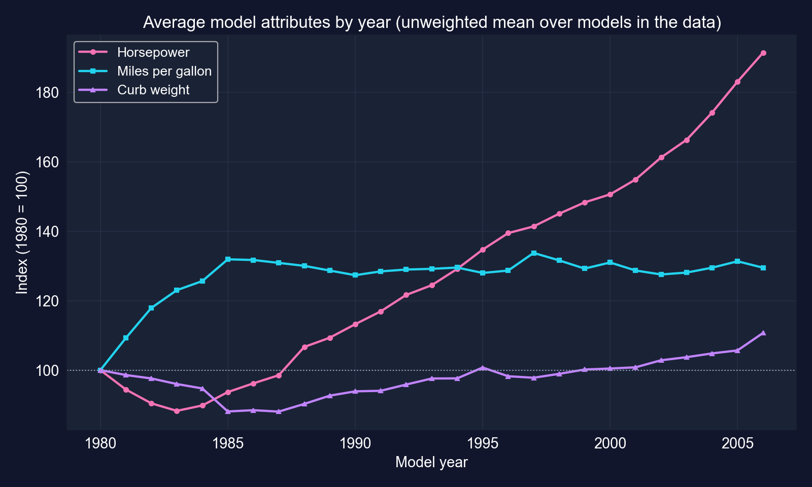
Unweighted average over the models in the data, indexed to 1980 = 100. Average MPG rose about 32% by 1985, then stayed roughly flat while horsepower nearly doubled.
From 1985 to 2006, average horsepower climbed steadily while average MPG barely moved.
Vehicles from the same manufacturer share engine platforms, engineering teams, design philosophy and testing practices. So their regression errors are correlated within the manufacturer.
With correlated errors, the effective sample size is closer to the number of clusters than to the number of rows.
!pip install -q pyfixest # pyfixest is not preinstalled in Colab
import pandas as pd # tabular data
import pyfixest as pf # OLS with R-style formulas
url = "https://raw.githubusercontent.com/quarcs-lab/data-open/master/AED/AED_AUTOSMPG.DTA"
data_auto = pd.read_stata(url) # 26,995 vehicles, 1980–2006 (logs pre-computed)
print(data_auto[["mpg", "curbwt", "hp", "torque", "year"]].describe()) # summary statistics
print(data_auto["mfr"].value_counts().head(10)) # observations per maker
# log MPG on log HP, log weight, log torque and a linear year trend
fit_auto = pf.feols("lmpg ~ lhp + lcurbwt + ltorque + year", data=data_auto,
vcov={"CRV1": "mfr"}) # cluster-robust SEs by manufacturer
fit_auto.summary() # elasticities + clustered SEs
print(data_auto["mfr"].nunique()) # number of clusters: 39| Variable | Coef. | CRV1 SE | \(t\) | \(p\) | 95% CI |
|---|---|---|---|---|---|
| Intercept | −20.843 | 1.988 | −10.48 | < 0.001 | [−24.87, −16.82] |
lhp |
−0.181 | 0.065 | −2.79 | 0.008 | [−0.31, −0.05] |
lcurbwt |
−0.562 | 0.057 | −9.94 | < 0.001 | [−0.68, −0.45] |
ltorque |
−0.141 | 0.064 | −2.21 | 0.033 | [−0.27, −0.01] |
year |
0.0152 | 0.0011 | 13.84 | < 0.001 | [0.013, 0.017] |
N = 26,995 · SEs clustered by manufacturer (39 clusters) · \(R^2 = 0.777\)
Weight carries the largest elasticity, and the year trend shows steady technical progress at fixed attributes.
Engineers made engines more efficient every year, and buyers took the gains as more powerful (and somewhat heavier) cars.
| Variable | HC1 SE (ignores clusters) | CRV1 SE (by manufacturer) | Ratio |
|---|---|---|---|
lhp |
0.0071 | 0.0651 | 9.1× |
lcurbwt |
0.0080 | 0.0566 | 7.0× |
ltorque |
0.0076 | 0.0640 | 8.4× |
year |
0.00017 | 0.0011 | 6.4× |
Same coefficients; only vcov changes. HC1 comparison: pf.feols("lmpg ~ lhp + lcurbwt + ltorque + year", data=data_auto, vcov="HC1")
If we ignored the clustering, every \(t\)-statistic would be inflated 6–9×. The torque effect (\(t = 2.21\) clustered) would look like \(t \approx 18.6\).
Within these limits, the large weight elasticity and the year trend are robust, and they tell a coherent story.
Cases 13.5–13.8 · RCT · DiD · RD · IV
\[\underbrace{E[Y \mid D{=}1] - E[Y \mid D{=}0]}_{\text{observed difference}} = \underbrace{E[Y_1 - Y_0 \mid D{=}1]}_{\text{effect on the treated (ATT)}} + \underbrace{E[Y_0 \mid D{=}1] - E[Y_0 \mid D{=}0]}_{\text{selection bias}}\]
\(Y_1\), \(Y_0\): potential outcomes with and without treatment. We only ever observe one of them per unit. The other is the counterfactual.
Every design in this act is a strategy for driving the selection-bias term to zero.
| Design | Where the counterfactual comes from | Case |
|---|---|---|
| RCT | a randomly assigned control group | 13.5 RAND health insurance |
| Difference-in-differences | the control group’s change over time | 13.6 South African clinics |
| Regression discontinuity | units just on the other side of a cutoff | 13.7 Senate elections |
| Instrumental variables | variation in treatment driven only by an instrument | 13.8 colonial institutions |
Each design swaps the unverifiable “I controlled for everything” for one specific assumption you can argue about.
Randomized controlled trial · RAND Health Insurance Experiment · SEs clustered by family
Moral hazard: if insurance makes care cheaper at the point of use, do people use more of it? That question drives every debate about deductibles and co-pays.
Why observational data fail. People choose their insurance:
In observational data, “generous plan → higher spending” mixes the plan’s effect with who chose it.
RAND Health Insurance Experiment (1974–1982)
Why it works
Randomization does not equalize the groups exactly. It makes every difference before treatment pure chance, which standard errors already account for.
| Value | |
|---|---|
| Person-year observations, all years | 20,203 |
| Observations used (year 1 only) | 5,639 |
| Families (clusters) in year 1 | 1,930 |
| Median annual spending (2011 $) | $479 |
| Largest annual spending | $175,831 |
Outcome spending = inpatient + outpatient medical spending in 2011 dollars. Plan dummies: coins25, coinsmixed, coins50, coins95, coinsindiv; free care is the omitted baseline.
Spending is extremely skewed (median $479, maximum $175,831), so group means will be noisy.
!pip install -q pyfixest # pyfixest is not preinstalled in Colab
import pandas as pd # tabular data
import pyfixest as pf # OLS with R-style formulas
url = "https://raw.githubusercontent.com/quarcs-lab/data-open/master/AED/AED_HEALTHINSEXP.DTA"
data_health = pd.read_stata(url) # RAND HIE, all years (20,203 person-years)
data_health_y1 = data_health[data_health["year"] == 1] # first year only: 5,639 obs
spending_by_plan = data_health_y1.groupby("plan")["spending"].agg(["mean", "std", "count"])
print(spending_by_plan) # mean, SD and size of each randomized groupWith random assignment, this simple table of group means is already a causal comparison.
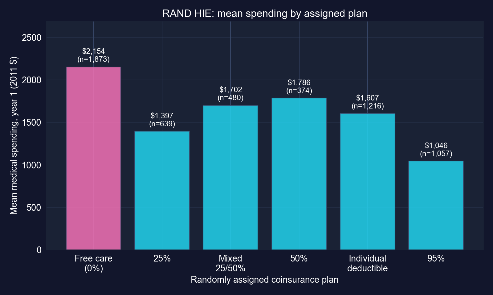
Mean year-1 spending by randomly assigned plan (2011 $), with group sizes.
Every cost-sharing plan spends less than free care, and the 95% plan spends about half.
# continues from the previous block
# spending on plan dummies; free care (coins0) is the omitted baseline
fit_rct = pf.feols("spending ~ coins25 + coins50 + coins95 + coinsmixed + coinsindiv",
data=data_health_y1, vcov={"CRV1": "idfamily"}) # cluster by family
fit_rct.summary() # each coefficient = plan mean − free-care meanA regression on a full set of group dummies reproduces the group means exactly: intercept = baseline mean, slopes = differences from it.
| Variable | Coef. ($) | CRV1 SE | \(t\) | \(p\) | 95% CI | % of baseline |
|---|---|---|---|---|---|---|
| Intercept (free care) | 2,153.57 | 118.31 | 18.20 | < 0.001 | [1,921.5, 2,385.6] | — |
coins25 |
−756.91 | 190.04 | −3.98 | < 0.001 | [−1,129.6, −384.2] | −35% |
coins50 |
−367.72 | 618.04 | −0.59 | 0.552 | [−1,579.8, 844.4] | −17% |
coins95 |
−1,107.75 | 150.37 | −7.37 | < 0.001 | [−1,402.6, −812.9] | −51% |
coinsmixed |
−451.70 | 239.42 | −1.89 | 0.059 | [−921.3, 17.9] | −21% |
coinsindiv |
−546.50 | 162.15 | −3.37 | < 0.001 | [−864.5, −228.5] | −25% |
Plans: coins25 25% · coins50 50% · coins95 95% · coinsmixed 25/50% · coinsindiv individual deductible · N = 5,639 · SEs clustered by family (1,930) · \(R^2 = 0.007\)
Three plans are clearly below free care. The 50% plan is not significantly different (\(p = 0.55\)): its CI runs from \(-\$1{,}580\) to \(+\$844\).
# continues from the previous block
import numpy as np # matrix algebra
from scipy.stats import f as f_dist # F distribution
coef_names = ["coins25", "coins50", "coins95", "coinsmixed", "coinsindiv"]
coefs = np.array([fit_rct.coef()[c] for c in coef_names]) # the 5 plan effects
idx = [list(fit_rct.coef().index).index(c) for c in coef_names] # their positions
V_sub = fit_rct._vcov[np.ix_(idx, idx)] # clustered covariance of the 5 effects
f_val = coefs @ np.linalg.inv(V_sub) @ coefs / len(coef_names) # Wald F statistic
p_val = 1 - f_dist.cdf(f_val, len(coef_names), fit_rct._N - len(fit_rct.coef()))
print(f_val, p_val) # H0: all five plan effects = 0Result: \(F = 11.39\), \(p < 0.001\). We reject that insurance generosity is irrelevant: plan design causally changes spending.
An RCT turns a difference in means into a causal effect. Precision, not bias, is the remaining problem.
Randomization identifies the effect for the people in the experiment. Its credibility then depends on keeping the randomized groups intact.
Difference-in-differences · South Africa, 1993 vs 1998 · SEs clustered by community
hightreat = 1); comparison group: children in communities without onewaz, the weight-for-age \(z\)-score, a standard measure of child nutritionExposure to the reform depended on where a child lived, which gives a natural treatment and comparison group.
| Group | 1993 (pre) | 1998 (post) | Change |
|---|---|---|---|
| High treatment (clinic) | \(\bar Y_{T,0}\) | \(\bar Y_{T,1}\) | \(\Delta_T\) |
| Low treatment (no clinic) | \(\bar Y_{C,0}\) | \(\bar Y_{C,1}\) | \(\Delta_C\) |
\[\text{DiD} = (\bar Y_{T,1} - \bar Y_{T,0}) - (\bar Y_{C,1} - \bar Y_{C,0}) = \Delta_T - \Delta_C\]
The first difference removes permanent gaps between communities. The second removes changes common to everyone (national trends, the economy).
!pip install -q pyfixest # pyfixest is not preinstalled in Colab
import pandas as pd # tabular data
import pyfixest as pf # OLS with R-style formulas
url = "https://raw.githubusercontent.com/quarcs-lab/data-open/master/AED/AED_HEALTHACCESS.DTA"
data_access = pd.read_stata(url) # 1,071 children aged 0–4; 1993 and 1998
print(data_access.groupby(["hightreat", "post"])["waz"].agg(["mean", "count"])) # 2×2 means
m = data_access.groupby(["hightreat", "post"])["waz"].mean() # the four cell means
pre_control, post_control = m[(0, 0)], m[(0, 1)] # no clinic: 1993, 1998
pre_treat, post_treat = m[(1, 0)], m[(1, 1)] # clinic: 1993, 1998
did_estimate = (post_treat - pre_treat) - (post_control - pre_control)
print(post_control - pre_control, post_treat - pre_treat, did_estimate) # ΔC, ΔT, DiDMean waz (n) |
1993 (pre) | 1998 (post) | Change |
|---|---|---|---|
| Low treatment (no clinic) | −0.414 (325) | −0.069 (288) | +0.345 |
| High treatment (clinic) | −0.545 (246) | 0.321 (212) | +0.867 |
| Difference (high − low) | −0.131 | +0.391 | +0.522 |
DiD \(= 0.867 - 0.345 = 0.522\). The same number appears as the difference of the two columns: \(0.391 - (-0.131) = 0.522\).
Children in clinic communities started slightly behind, ended clearly ahead, and gained 0.52 more than the comparison group.
| Comparison | Estimate | What it gets wrong |
|---|---|---|
| After-only gap (1998: high − low) | 0.391 | ignores that treated children started 0.131 lower, so it is biased down |
| Before–after, treated only | 0.867 | credits the reform with the common improvement (+0.345), so it is biased up |
| Difference-in-differences | 0.522 | removes both the baseline gap and the common trend |
Each single difference is contaminated by one confounder. Using both differences removes both.
# continues from the previous block
# waz on group, period and their interaction (postXhigh = post × hightreat)
fit_did = pf.feols("waz ~ hightreat + post + postXhigh", data=data_access,
vcov={"CRV1": "idcommunity"}) # cluster by community (54 clusters)
fit_did.summary() # postXhigh = the DiD estimate
print(fit_did.coef()["postXhigh"], did_estimate) # identical: 0.522 and 0.522The regression gives the same 0.522, plus a standard error that accounts for correlation within communities.
| Variable | Coef. | CRV1 SE | \(t\) | \(p\) | 95% CI | = in the 2×2 table |
|---|---|---|---|---|---|---|
| Intercept | −0.414 | 0.115 | −3.60 | 0.001 | [−0.645, −0.183] | control, 1993 |
hightreat |
−0.131 | 0.197 | −0.67 | 0.508 | [−0.526, 0.264] | baseline gap |
post |
0.345 | 0.137 | 2.52 | 0.015 | [0.070, 0.620] | common trend (\(\Delta_C\)) |
postXhigh |
0.522 | 0.235 | 2.22 | 0.031 | [0.050, 0.994] | DiD |
N = 1,071 · SEs clustered by community (54 clusters) · \(R^2 = 0.040\)
The baseline gap is small and insignificant (\(p = 0.51\)), and the DiD effect is significant at 5% (\(p = 0.031\)), though its CI is wide.
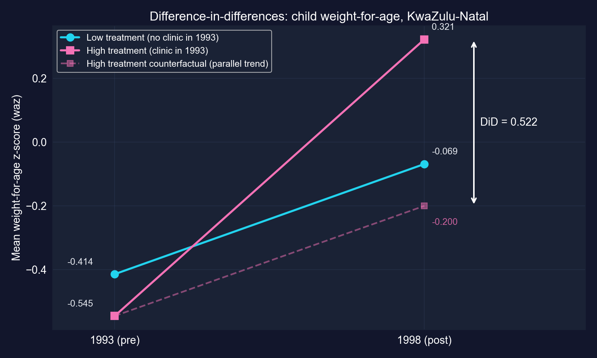
Mean waz by group and year. Dashed: the treated group’s counterfactual path under parallel trends (−0.545 + 0.345 = −0.200).
The effect is the vertical gap between what happened (0.321) and the parallel-trend counterfactual (−0.200), which is 0.522.
waz is measured in SDs of a reference growth standard, so the effect is +0.52 \(z\)-units. In this sample waz has SD 1.59, so that is about 0.33 sample SDsDiD gives a credible direction and a plausible magnitude. With 54 communities, the precision is modest.
Every DiD estimate rests on the dashed line. Defend it with institutional knowledge, pre-trends and placebo tests.
Regression discontinuity · U.S. Senate elections, 1914–2010 · HC1 standard errors
Parties that hold a seat tend to win it again. But is that because holding the seat helps, or because parties that win were stronger to begin with?
The data (AED_INCUMBENCY.DTA): 1,390 U.S. Senate elections, 1914–2010
margin: Democratic margin of victory in election \(t\) (percentage points, −100 to +100)win \(= 1\) if margin \(> 0\) (the Democrat won the seat)vote: Democratic vote share in the next election for that seat, \(t+1\) (1,297 non-missing)The unit is the party’s seat, so this case measures the party incumbency advantage: the gain to the Democratic party from having won the seat last time.
marginmargin \(= 0\)\[\text{vote}_{t+1} = \beta_1 + \beta_2\,\text{win}_t + \beta_3\,\text{margin}_t + u\]
\(\beta_2\) is the jump in the outcome at margin \(= 0\), after controlling for the smooth effect of the margin.
Within a hair of 50%, who wins is close to a coin flip, so winners and losers are comparable except for winning.
| Comparison | Next-election Democratic vote share | Gap |
|---|---|---|
| Seats the Democrats won (702) | 62.6% | |
| Seats the Democrats lost (595) | 40.9% | |
| Naive difference | 21.7 pp | |
| RD estimate at the cutoff (next slides) | 4.8 pp |
Most of the raw 21.7-point gap is selection: states where Democrats win comfortably will keep voting Democratic, incumbent or not.
!pip install -q pyfixest # pyfixest is not preinstalled in Colab
import pandas as pd # tabular data
import pyfixest as pf # OLS with R-style formulas
url = "https://raw.githubusercontent.com/quarcs-lab/data-open/master/AED/AED_INCUMBENCY.DTA"
data_incumb = pd.read_stata(url) # 1,390 Senate elections, 1914–2010
print(data_incumb[["vote", "margin", "win"]].describe()) # running variable and outcome
data_rd = data_incumb[data_incumb["vote"].notna()].copy() # keep races with a t+1 outcome
naive = data_rd.groupby("win")["vote"].mean() # naive: winners vs losers
fit_rd = pf.feols("vote ~ win + margin", data=data_rd, vcov="HC1") # jump + linear margin
fit_rd.summary() # win coefficient = discontinuity at 0
print(fit_rd.confint().loc["win"]) # 95% CI for the jump| Variable | Coef. | HC1 SE | \(t\) | \(p\) | 95% CI |
|---|---|---|---|---|---|
| Intercept | 47.331 | 0.526 | 89.95 | < 0.001 | [46.30, 48.36] |
win |
4.785 | 0.860 | 5.56 | < 0.001 | [3.10, 6.47] |
margin |
0.348 | 0.017 | 20.42 | < 0.001 | [0.315, 0.381] |
N = 1,297 · HC1 SEs · \(R^2 = 0.578\)
The jump at the cutoff is 4.8 percentage points, not 4.8%, and it is precisely estimated.
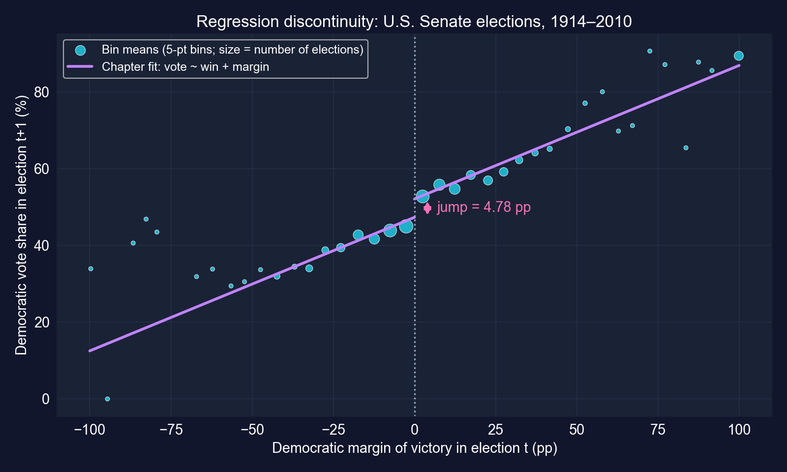
Binned means of next-election Democratic vote share by current margin (5-point bins). Purple: the chapter’s fitted model, one slope, with a jump at 0.
The bins jump at zero: races just won sit visibly above races just lost.
RD trades breadth for credibility: a very believable effect, for a narrow set of elections.
rdrobust), plus sensitivity checksmargin and the balance of covariates at 0The design is credible. How much to trust the specific 4.8 depends on the functional form, so a local robustness check is the next step.
Instrumental variables · two-stage least squares · 64 former colonies
Regress GDP on the quality of institutions and you get a strong positive slope. But institutions are endogenous:
| Source of endogeneity | Likely direction of OLS bias |
|---|---|
| Reverse causation: rich countries can afford better institutions | upward |
| Omitted variables: geography, culture, history affect both | likely upward |
| Measurement error: “institutions” is hard to measure | toward zero (attenuation) |
OLS mixes all three, and the biases pull in opposite directions, so we cannot even sign the net bias.
The historical argument (AJR 2001):
Settler mortality (1600s–1800s) \(\to\) type of colonial institutions \(\to\) institutions today \(\to\) GDP today
An instrument is valid only if it moves the treatment and has no other path to the outcome. The second condition rests on argument, not data.
!pip install -q pyfixest # pyfixest is not preinstalled in Colab
import pandas as pd # tabular data
import pyfixest as pf # OLS and IV with R-style formulas
url = "https://raw.githubusercontent.com/quarcs-lab/data-open/master/AED/AED_INSTITUTIONS.DTA"
data_inst = pd.read_stata(url) # 64 former colonies (Acemoglu–Johnson–Robinson)
print(data_inst[["logpgp95", "avexpr", "logem4"]].describe()) # outcome, regressor, instrument
fit_ols = pf.feols("logpgp95 ~ avexpr", data=data_inst, vcov="HC1") # OLS: endogenous
fit_ols.summary() # benchmark slope| Variable | Coef. | HC1 SE | \(t\) | \(p\) | 95% CI |
|---|---|---|---|---|---|
| Intercept | 4.660 | 0.320 | 14.56 | < 0.001 | [4.02, 5.30] |
avexpr |
0.522 | 0.050 | 10.46 | < 0.001 | [0.422, 0.622] |
N = 64 · HC1 SEs · \(R^2 = 0.540\)
One point more on the 0–10 expropriation-protection index goes with 0.52 log points higher GDP per capita: \(e^{0.522} - 1 \approx\) 69% higher.
A large and precise association, but it inherits every endogeneity problem on the previous slide.
# continues from the previous block
fit_first = pf.feols("avexpr ~ logem4", data=data_inst, vcov="HC1") # institutions on instrument
fit_first.summary() # does settler mortality predict institutions?
first_f = fit_first.tstat()["logem4"] ** 2 # one instrument: first-stage F = t²
print(first_f) # rule of thumb: F > 10 → not weakWith a single instrument, the first-stage \(F\)-statistic is just the squared \(t\)-statistic on the instrument.
| Coef. | HC1 SE | |
|---|---|---|
| Intercept | 9.341 | 0.704 |
logem4 |
−0.607 | 0.150 |
N = 64 · \(R^2 = 0.270\) · \(t = -4.04\)
First-stage \(F = (-4.04)^2 =\) 16.32 \(> 10\)
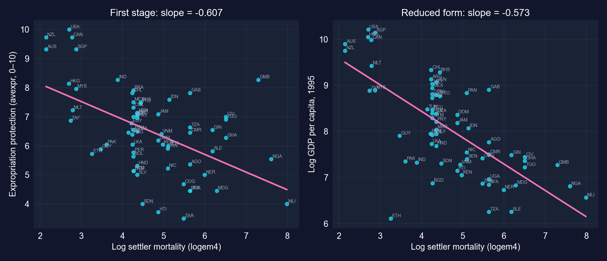
Places deadlier for settlers have weaker property-rights protection today. The instrument is relevant and passes the \(F > 10\) rule of thumb.
# continues from the previous block
# formula syntax: outcome ~ exogenous regressors | endogenous ~ instrument
fit_iv = pf.feols("logpgp95 ~ 1 | avexpr ~ logem4", data=data_inst, vcov="HC1") # 2SLS
fit_iv.summary() # causal slope under the IV assumptions
print(fit_ols.coef()["avexpr"], fit_iv.coef()["avexpr"]) # OLS vs IV
import numpy as np # for np.exp
print(np.exp(fit_iv.coef()["avexpr"])) # multiplicative effect on GDP: e^bThe | separates the exogenous part (1, just the intercept) from the endogenous regressor and its instrument.
| Variable | Coef. | HC1 SE | \(t\) | \(p\) | 95% CI |
|---|---|---|---|---|---|
| Intercept | 1.910 | 1.193 | 1.60 | 0.114 | [−0.47, 4.29] |
avexpr (instrumented) |
0.944 | 0.179 | 5.28 | < 0.001 | [0.587, 1.302] |
N = 64 · 2SLS, instrument logem4 · HC1 SEs
One more point of institutional quality causes 0.94 log points higher GDP per capita, if the instrument is valid.
\[\hat\beta_{IV} = \frac{\text{effect of } Z \text{ on } Y}{\text{effect of } Z \text{ on } X} = \frac{-0.573}{-0.607} = 0.944\]
Reduced form: \(-0.573\) is the slope of log GDP on log settler mortality (bivariate OLS, same 64 countries).
IV rescales the instrument’s total effect on GDP by its effect on institutions. All the identifying power comes from settler mortality.
| OLS | 2SLS (IV) | |
|---|---|---|
Coefficient on avexpr |
0.522 | 0.944 |
| Standard error (HC1) | 0.050 | 0.179 |
| 95% CI | [0.42, 0.62] | [0.59, 1.30] |
| GDP effect of +1 index point, \(100(e^{b}-1)\) | +69% | +157% |
GDP effect of +1 SD of avexpr (1.47 points) |
×2.2 | ×4.0 |
| Variation used | all variation in institutions | only the part driven by settler mortality |
The IV estimate is larger and less precise. Under the IV assumptions, OLS understated the effect of institutions.
avexpr biases OLS toward zero; IV, using a variable unrelated to that error, corrects itOLS < IV is consistent with attenuation bias. It does not prove it.
IV is only as good as its story. Settler mortality is a famous and influential instrument, and a heavily debated one.
Reading · merging · cleaning · the work behind every regression
"M", "m", "Male"Data preparation often takes 60–80% of a project’s time, and every choice can move the final coefficient.
| Case | Wrangling step | Why it matters |
|---|---|---|
| 13.2 Cobb–Douglas | np.log() of \(Q\), \(K\), \(L\); a time index |
logs make it linear; HAC needs time order |
| 13.3 Phillips | split at 1970; dropna(subset=["inflgdp1yr"]) |
the long and short models must share a sample |
| 13.4 Autos | pre-computed logs (lmpg, lcurbwt, …) |
elasticities without manual transforms |
| 13.5 RAND | keep year == 1 |
one observation per person |
| 13.7 Incumbency | drop missing vote (1,390 → 1,297) |
no outcome, no observation |
Each line changed the estimation sample or the meaning of a coefficient, which is why it belongs in the write-up.
import pandas as pd # tabular data
# data = pd.read_stata("file.dta") # Stata files
# data = pd.read_csv("file.csv") # comma-separated text
# data = pd.read_excel("file.xlsx") # Excel workbooks
df1 = pd.DataFrame({"id": [1, 2, 3], "value_a": [10, 20, 30]}) # table A
df2 = pd.DataFrame({"id": [1, 2, 4], "value_b": [100, 200, 400]}) # table B
print(df1); print(df2) # ids 3 and 4 appear in only one table
merged = pd.merge(df1, df2, on="id", how="inner") # keep ids present in BOTH
print(merged) # the inner join resultid |
value_a |
|---|---|
| 1 | 10 |
| 2 | 20 |
| 3 | 30 |
df1
id |
value_b |
|---|---|
| 1 | 100 |
| 2 | 200 |
| 4 | 400 |
df2
id |
value_a |
value_b |
|---|---|---|
| 1 | 10 | 100 |
| 2 | 20 | 200 |
merged (inner join): ids 3 and 4 are gone
Always count rows before and after a merge. Lost observations are lost evidence, and can be a source of selection.
import numpy as np # np.nan marks missing values
import pandas as pd # tabular data
df_dirty = pd.DataFrame({"age": [25, 30, -5, 200, 35], # two impossible ages
"income": [50000, 60000, None, 75000, 80000], # one missing
"gender": ["M", "F", "m", "Female", "M"]}) # inconsistent codes
df_clean = df_dirty.copy() # never overwrite the raw data
df_clean.loc[df_clean["age"] < 0, "age"] = np.nan # impossible: negative age → missing
df_clean.loc[df_clean["age"] > 120, "age"] = np.nan # impossible: age above 120 → missing
df_clean["income"] = df_clean["income"].fillna(df_clean["income"].median()) # median impute
df_clean["gender"] = df_clean["gender"].str.upper().str[0] # "m"/"Female" → "M"/"F"
print(df_dirty); print(df_clean) # before and afterage |
income |
gender |
|---|---|---|
| 25 | 50,000 | M |
| 30 | 60,000 | F |
| −5 | NaN | m |
| 200 | 75,000 | Female |
| 35 | 80,000 | M |
raw
age |
income |
gender |
|---|---|---|
| 25 | 50,000 | M |
| 30 | 60,000 | F |
| NaN | 67,500 | M |
| NaN | 75,000 | F |
| 35 | 80,000 | M |
cleaned
Imputation fills the gap with 67,500 (the median of the four observed incomes), but it invents certainty. Flag imputed values and report how many there are.
Act III · The resolution
| RCT (13.5) | DiD (13.6) | RD (13.7) | IV (13.8) | |
|---|---|---|---|---|
| Source of variation | random assignment | group × period | a sharp cutoff | an instrument |
| Identifying assumption | intact randomization | parallel trends | continuity at the cutoff | relevance + exclusion |
| Estimand | average effect in the experiment | effect on the treated (ATT) | effect at the cutoff (local) | local average effect (LATE) |
| Main threat | attrition, non-compliance | pre-trends, other shocks | sorting, functional form | invalid exclusion, weak IV |
| Testable? | covariate balance | pre-trends (more periods) | density, balance at 0 | relevance only (\(F\)) |
| Chapter estimate | −$1,108 (95% plan) | +0.52 z-units | +4.8 pp | 0.94 log points |
Every design buys credibility with an assumption. Know which assumption you bought, and for whom the estimate holds.
Start from the source of variation, not from the estimator. The estimator is almost always OLS or 2SLS.
| Case | Naive comparison | Naive | Design | Design-based |
|---|---|---|---|---|
| 13.3 | bivariate slope, 1970–2014 | +0.265 | add expected inflation | −0.128 |
| 13.6 | treated, before vs after | +0.867 | DiD | +0.522 |
| 13.6 | treated vs control, 1998 only | +0.391 | DiD | +0.522 |
| 13.7 | all winners vs all losers | +21.7 pp | RD at the cutoff | +4.8 pp |
| 13.8 | OLS | 0.522 | 2SLS | 0.944 |
The naive numbers were not slightly off: the wrong sign (13.3), 66% too large or 25% too small (13.6), 4.5× too large (13.7), 45% below the IV estimate (13.8).
Objection. “Just add enough controls and any regression becomes causal.”
Response. Controls close only the confounders you can measure. In 13.1, five controls left the parent-education slope almost unchanged, and that is no evidence it is causal. In 13.7, comparing winners with losers gives 21.7 points; the cutoff gives 4.8.
Identification comes from the design, not the dataset. Ask “where does the variation come from?” before asking “what is the coefficient?”
The most common misreadings come from skipping question 1: “4.8%” instead of 4.8 percentage points, “0.52 SD” without saying which SD, or “1%” for a percentage-point change.
pf.feols from school scores to the wealth of nationsHC1, NW for time series, CRV1 for groups; in 13.4 clustering changed SEs 6–9×